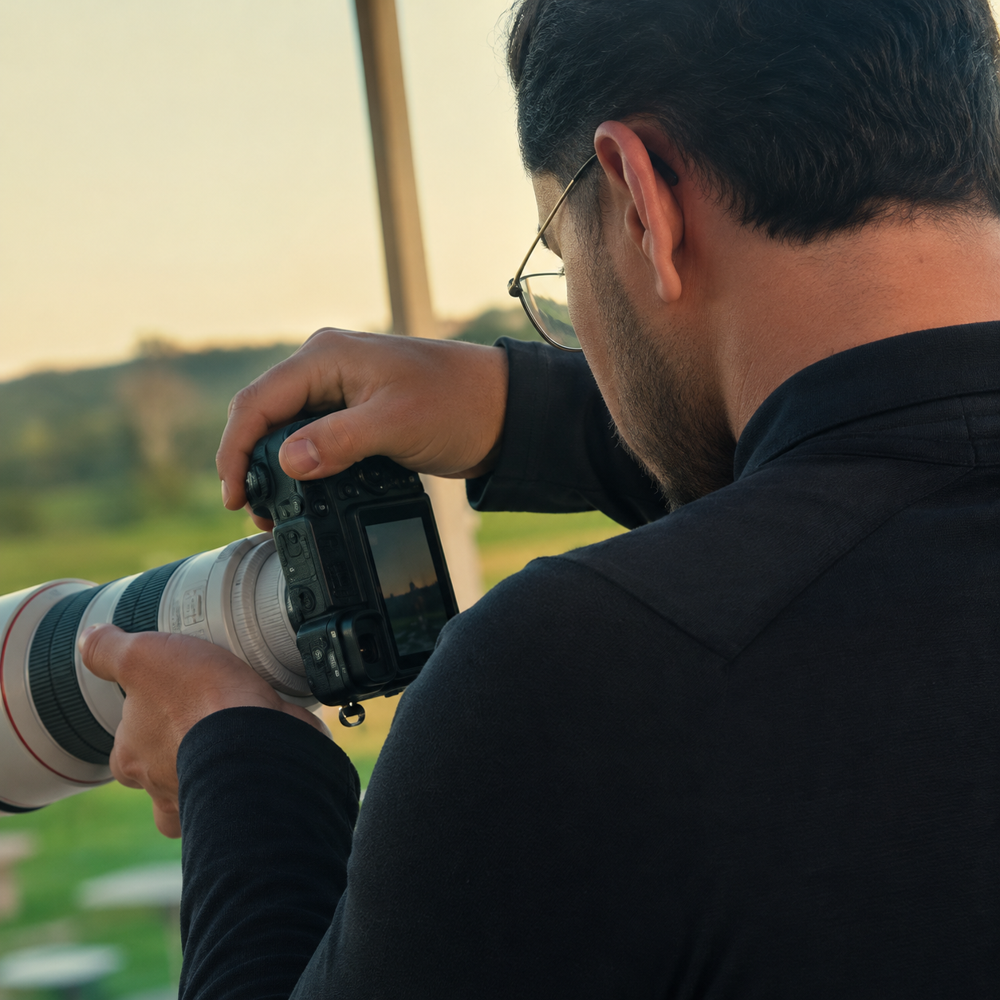

Fotografia com verdade · Maracanaú
Matheus Barros
Fotografia &
memórias que permanecem.
Matheus registra casamentos, aniversários, ensaios e eventos com direção leve, atenção aos detalhes e espaço para cada história acontecer de forma natural.
Um olhar atentoDireção leve · registro natural

Serviços
Histórias em
capítulos.
Uma galeria de casamentos, aniversários, ensaios e eventos — cada história com seu próprio ritmo.